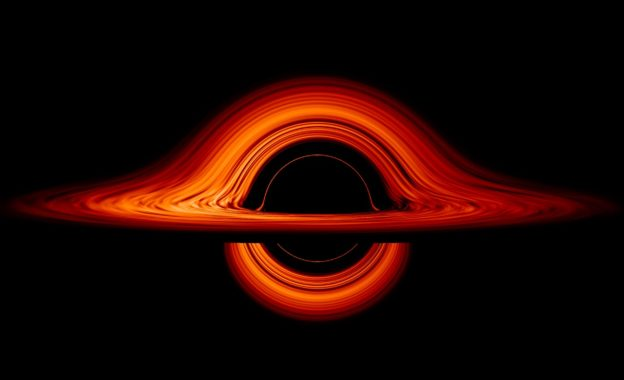

宇宙主題學習卡
宇宙大爆炸
宇宙從極小、極熱的狀態開始，短短瞬間膨脹成我們熟悉的宇宙。
恆星的生命週期
從星雲誕生，到白矮星、超新星或黑洞，恆星有如生命般的循環。

黑洞是什麼？
黑洞是密度極高的天體，其引力強大到連光都無法逃逸。
光年與距離概念
光年是距離單位，代表光一年走的距離，用來測量星際尺度。
宇宙微波背景輻射
這是大爆炸留下的熱痕跡，是研究宇宙早期的重要證據。
重力與空間彎曲
愛因斯坦提出重力是空間彎曲的結果，而非看不見的力量。

行星如何形成
行星從星際塵埃雲中聚集形成，經歷碰撞、融合與清除軌道過程。
太陽系結構
八大行星環繞太陽運行，伴隨小行星、彗星與衛星構成一個多層次系統。
彗星與流星
彗星是冰與塵的混合體，靠近太陽時會產生明亮尾巴，流星則是進入地球大氣的碎片。

太空望遠鏡
如哈伯望遠鏡可穿越地球大氣干擾，提供清晰宇宙影像。
地球磁場
地球的磁場可保護我們免於太陽風與宇宙射線的傷害，是無形的護盾。
多重宇宙理論
部分理論認為我們的宇宙只是無數宇宙中的一個，每個宇宙擁有不同法則。